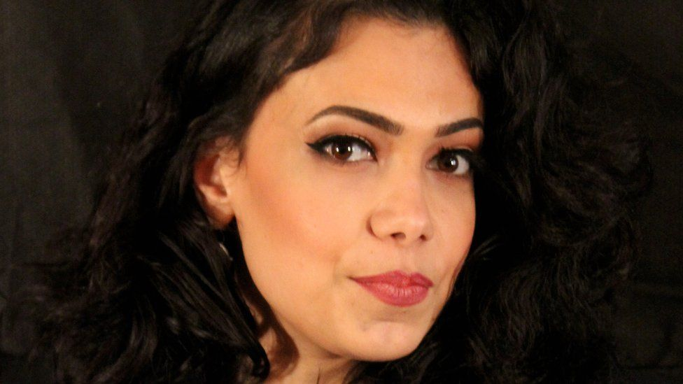
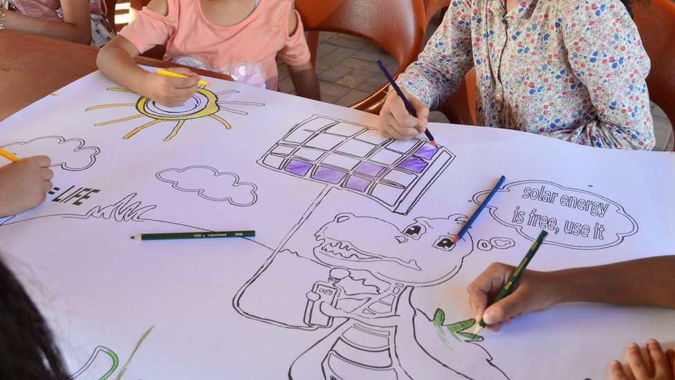
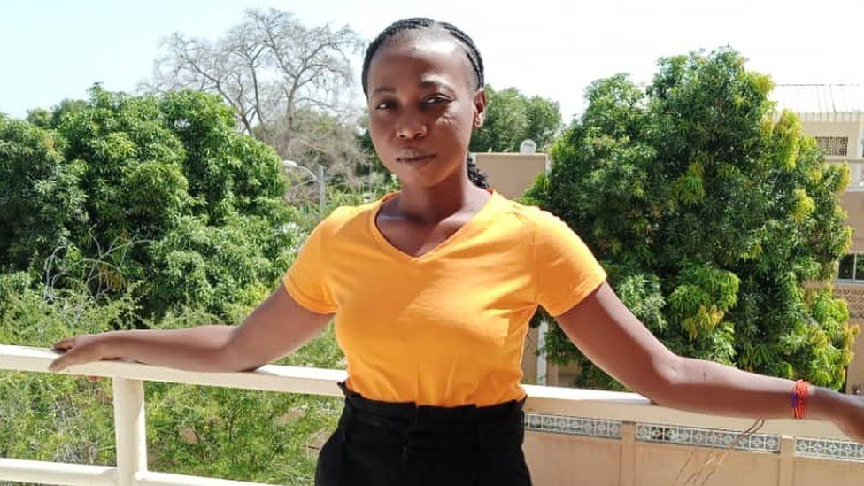
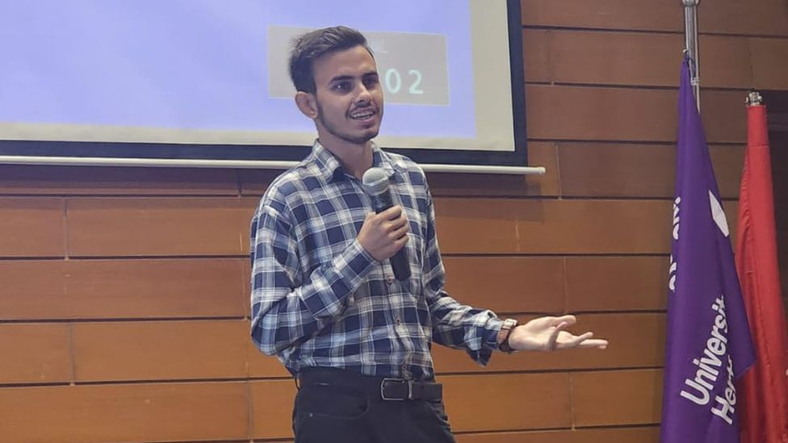
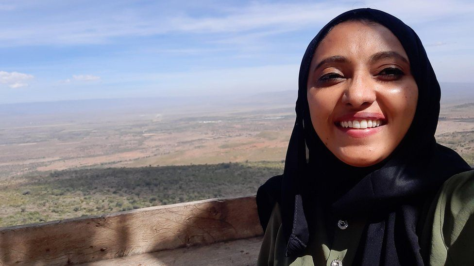

YUDHISHTIR CHANDRA BISWAS
YUDHISHTIR CHANDRA BISWAS
Yudhishtir Chandra Biswas, from Bangladesh, says he has tried to change the minds of sceptical friends and relatives
SOURCE: BBC NEWS
Climate change: The young activists changing the sceptics' minds
By Marco Silva
As global leaders gather at the COP28 summit in Dubai, environmental activists around the world are still challenging climate sceptics. Young people from five countries told BBC News how they are trying to change the minds of those who wrongly claim climate change is not real.
Growing up in Egypt, artist Hossna Hanafy didn't think climate change was a real issue. 'I never thought it was a global thing, or that it might be related to human behaviour,' she says.
As the planet gets warmer and the polar ice caps melt, scientists say that Ms Hanafy's home city of Alexandria, located on the Mediterranean coast, is at risk from rising sea levels.
Yet at school, she says her teachers mocked suggestions this might be the case, wrongly claiming this would 'never happen'.

HOSSNA HANAFI
Growing up, Hossna Hanafy thought climate change was 'normal'
Ms Hanafy attributed changes in Egypt's already arid climate, which scientists have linked to climate change, to 'the work of God and nature'.
'I never questioned it,' she recalls. And it wasn't until her own sister, an engineer, began challenging her views, that Ms Hanafy felt compelled to research the topic online.
At first, she was sceptical: 'I thought scientists sometimes exaggerated stuff.' But in the end, the information she came across, along with further conversations with her sister, changed Ms Hanafy's views.
'[Climate change] is a crisis,' she now tells the BBC. 'It's more, way more than I thought.'
Today, she runs workshops where children and teenagers can learn about climate change and other environmental issues through crafts or games.

GREEN SOCIETY
Through her workshops, Ms Hanafy hopes to raise awareness about the need to phase out fossil fuel use
'We deliver the message in a fun, interactive way that stays with them,' she says. 'We encourage them to open a conversation with their parents and their friends.'
Confronting falsehoods with facts
The reasons that lead people to question the existence of climate change are varied: from a poor understanding of science to a distrust of institutions, or even for ideological reasons.
'One of my cousins believed that climate change was a hoax being spread for political purposes,' says Yudhishtir Chandra Biswas, a 16-year-old student in Dhaka, Bangladesh.
'Her belief was largely influenced by misinformation she encountered on social media and through certain news sources.'
Mr Biswas wanted to change his cousin's mind - and turned to science for help.
'I brought in scientific evidence and reports that pointed to climate change as a driving force behind extreme weather events.'
But it wasn't until he showed her climate change was already having an impact in their home country that his cousin began reconsidering her stance.
'I shared stories with her of how severe weather events, like floods and storms, had affected people in Bangladesh.'
Scientists say extreme weather is becoming more frequent and more intenseas a result of climate change - with extreme floods or droughts acting as a vivid and deadly reminder of its effects worldwide.

DENEMBAYE JULIENNE
Denembaye Julienne has been raising awareness of climate change in her community near Lake Iro, in south-eastern Chad
'Drought hits this community every year', says Denembaye Julienne, an environmental activist from Chad.
'At first, the view in my community was that climate change was a natural phenomenon, or that it was a punishment from God.'
'So I took an old photo of Lake Chad and a recent one, and told people to observe the difference between the two images,' she says.
According to a 2018 UN report, Lake Chad shrunk by 90% in just about 60 years, with climate change among the key contributing factors.
By comparing the photos, she proved to people in her community that climate change is not a remote problem for future generations, but rather one already affecting people in Chad.
Changing attitudes 'takes time'
Murtaza Habib, a university student in Pakistan, has had similar experiences speaking to elderly relatives, for whom climate change was 'a distant issue', 'not affecting' their day-to-day lives.
Scientists say man-made climate change has increased the likelihood of extreme rainfall during monsoon season in Pakistan. But Mr Habib's relatives saw the phenomenon as 'an act of God', rather than something driven by human activity.
Because their beliefs were 'deeply ingrained', Mr Habib says changing their attitude towards climate change has taken 'time, patience, and consistent effort'. 'It rarely happens overnight,' he says.

MURTAZA HABIB
Murtaza Habib says climate change has become 'a regular part of family conversations'
But Mr Habib argues that addressing people's concerns and fears should be done in a tactful way. 'Be a good listener,' Mr Habib says. 'And when they ask questions or have doubts, be patient and respectful.'
'Nobody likes feeling attacked, so keep the conversation friendly and open.'
Asked whether he has been successful at changing his older relatives' minds, Mr Habib admits they have not fully abandoned their previous beliefs.
But, by making them aware of the consequences of climate change, his relatives have decided to embrace a more sustainable lifestyle - for example, by using gas instead of firewood for cooking and heating.
'You don't necessarily shift people by using climate-based messaging,' says Rachel McCloy, an associate professor in applied behavioural science at the University of Reading.
'For some people, we can say turn down your thermostat, because it's good for the climate. Other people's goals might not be aligned to climate goals, but they might be interested in saving money.'
What if there is no common ground?
Not everyone who tries to engage with climate sceptic friends or relatives is successful in their efforts.
Fazeela Mubarak's splits her time between London and Mombasa, Kenya, where she does advocacy work with women and girls affected by climate change.
When she heard one of her friends wrongly claiming that the climate had always been changing and that there was 'nothing we could ever do about it', she tried to change her mind.

FAZEELA MUBARAK
Fazeela Mubarak, in Kenya, says that changing people's beliefs can cause them 'a lot of discomfort'
She explained to her that burning fossil fuels releases the greenhouse gases which are driving the rapid warming of the planet, and this, in turn, is helping to drive extreme weather events across the region.
Her friend didn't agree with her arguments. 'We are still friends, but we don't discuss the climate anymore,' she says.
While global surveys suggest there is widespread recognition of climate change as a threat, conspiracy theories continue to spread online - and changing the minds of those spreading them may not be easy.
'There are limitations in terms of how useful it is to spend a lot of time talking to those people and trying to persuade them,' says Alison Anderson, professor of sociology at the University of Plymouth.
'Whereas there's another group of people, a much larger group of people, who may have doubts about climate change or assumptions that are misplaced and are more open to considering alternative views.
'It's far more productive to speak to those people.'
SOURCE: BBC NEWS